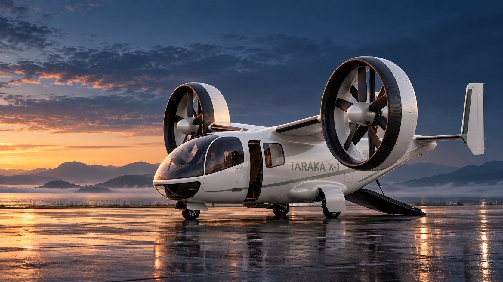
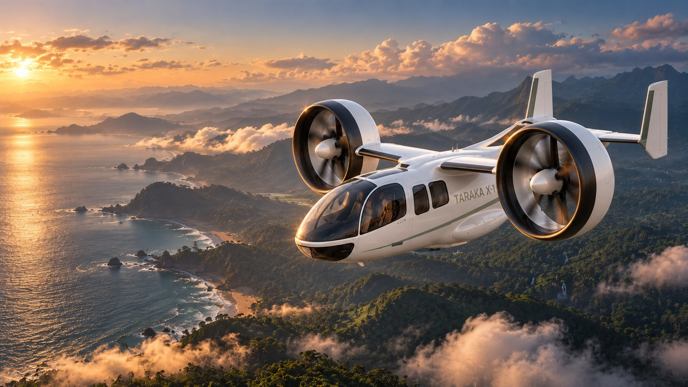
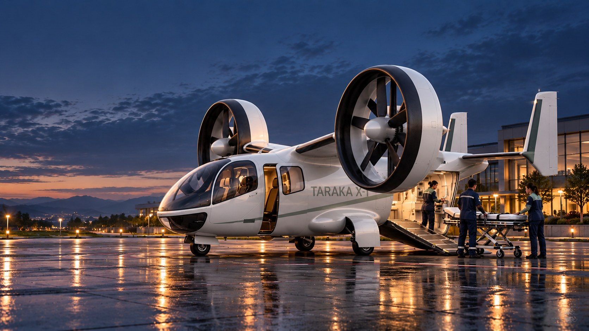

Introducing MALUS
An electric and hybrid VTOL research program. Introducing Taraka X-1, its first aircraft concept, using hydrogen-electric propulsion for the medical ambulance mission.

Illustrative concept rendering
Shared engineering. Different missions.
MALUS is the Modular Aerial Lift Utility System, the program under which electric and hybrid VTOL aircraft are developed in this research. Taraka X-1 is the first aircraft, created for medical ambulance transport.
Tilting ducts and electric propulsion.
Hydrogen storage, fuel cell and battery buffer.
Thrust and tilt coordinated through transition.
Patient litter, clinical team and equipment.
Utility pallet and a tie-down arrangement.
Instrumentation, ballast and an engineer’s station.
Common propulsion, energy and flight systems provide the aircraft baseline. Taraka X-1 is the first concept application.
Attachments, electrical services, mass limits, restraints and loading access must be specified and validated for each module.
Medical ambulance transport defines Taraka X-1. Cargo and research installations are wider program architecture studies. Module interfaces remain to be developed and validated.
Vertical lift. Regional ambition.
Created for the medical ambulance mission, Taraka X-1 combines twin tilting ducts, a hydrogen-electric powertrain and a dedicated medical cabin.

Target cruise speed
Target design range
Mission load target
Research targets, subject to validation. The medical mission load includes the pilot, clinical team, patient and equipment.
| Configuration input | Nominal study |
|---|---|
| Duct diameter / total disk area | 2 × 2.80 m / 12.315 m² |
| Takeoff mass - original convergence | 1,537 kg |
| Hover / cruise power | 495 / 235 kW |
The original mass convergence omitted the hydrogen tank vessel. Hover power, battery mass and range require integrated re-sizing with that mass included.
Civilian medical transport
Taraka X-1 is created for medical ambulance transport. The design case explores regional patient transfers in India. The patient, the clinical team and their equipment define the cabin and mission load.

One patient litter, three clinical seats and a critical-care console. Side access and an aft ramp inform the loading concept.
Clearances, restraint systems, equipment power and ground-operation procedures remain part of the cabin development work.
| Mission load allocation | Mass |
|---|---|
| Pilot | 80 kg |
| Two EMTs | 160 kg |
| Trauma paramedic | 80 kg |
| Patient and litter | 90 kg |
| Critical-care kit | 190 kg |
| Total target allocation | 600 kg |
No routes, operators, clinical response times or available transport services are implied. Performance and operating limits remain unvalidated.
Connected systems
The duct inlet, rotor stations, barrel and diffuser operate as a single aerodynamic system. The study uses two coaxial five-blade rotors and seven stator vanes per duct.
Oblique inlet flow, containment, duct drag, ground effects and acoustics require integrated validation.
Coordinated thrust and duct tilt provide control in hover. Aerodynamic forces increasingly contribute as the aircraft transitions toward forward flight.
Conversion corridor, control allocation and fault response remain open engineering work.
| Fuel-cell output | 235 kW |
| Battery mass | 123 kg |
| Usable hydrogen allocation | 42 kg |
| Additional tank vessel estimate | ~68 kg at 38% gravimetric efficiency |
The tank estimate is a budget input, not a released tank design. Cooling, plumbing, insulation, reserves and the full mission energy budget need to be carried through the next convergence.
The website’s aircraft geometry and analytic flow illustration support configuration exploration. They do not constitute a validated flight-dynamics simulation or a CFD solution.
An open research basis
Re-converge the configuration with the vessel and thermal systems included, then reconcile hover demand and range.
Establish structural mass, duct containment, tilt loads, occupant provisions and a consistent empennage baseline.
Model aerodynamic interactions and control authority across the conversion corridor.
Measure component behaviour and define practical operating limits for the intended mission.
Specify module attachment, services, mass properties, restraints and loading access.
docs/07_TWIN_DUCT_AMBULANCE_ARCHITECTURE.md